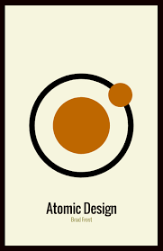

Assignment 4.2: Build a Web Page Exercise - Part 4
Just Listen by Sarah Dessen
(Author: Sarah Dessen)
That Summer by Sarah Dessen
(Author: Sarah Dessen)
Atomic Design by Brad Frost

(Author: Brad Frost)
back to Taylor Niemann's CSD 340 Landing Page